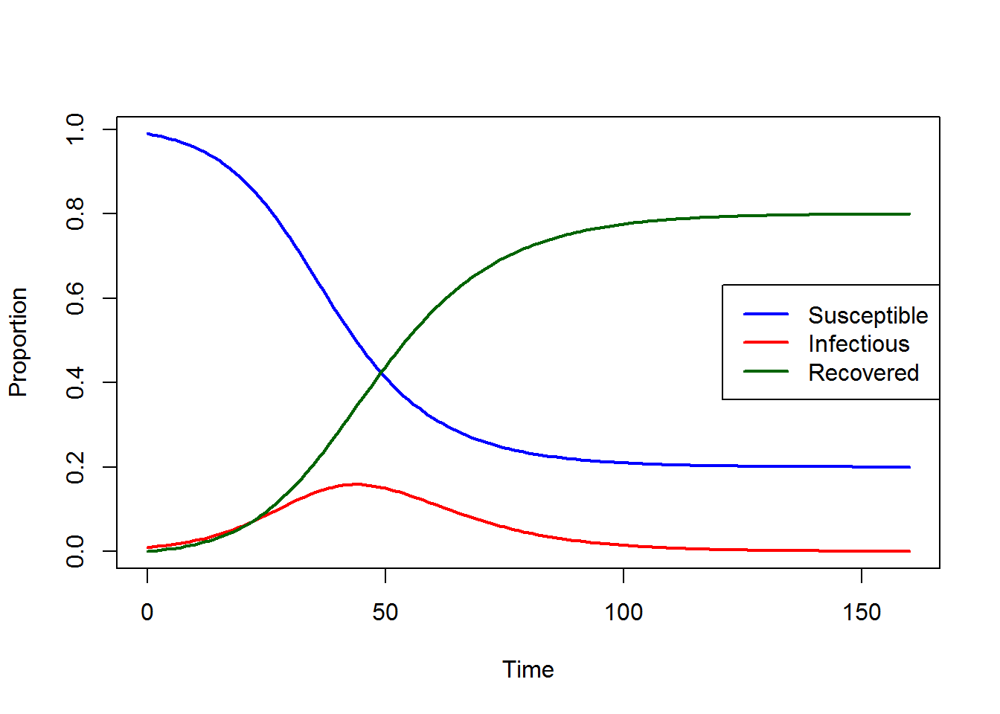
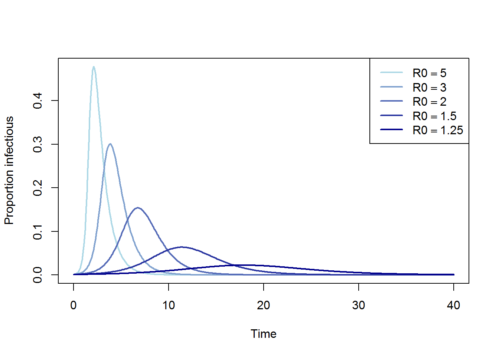
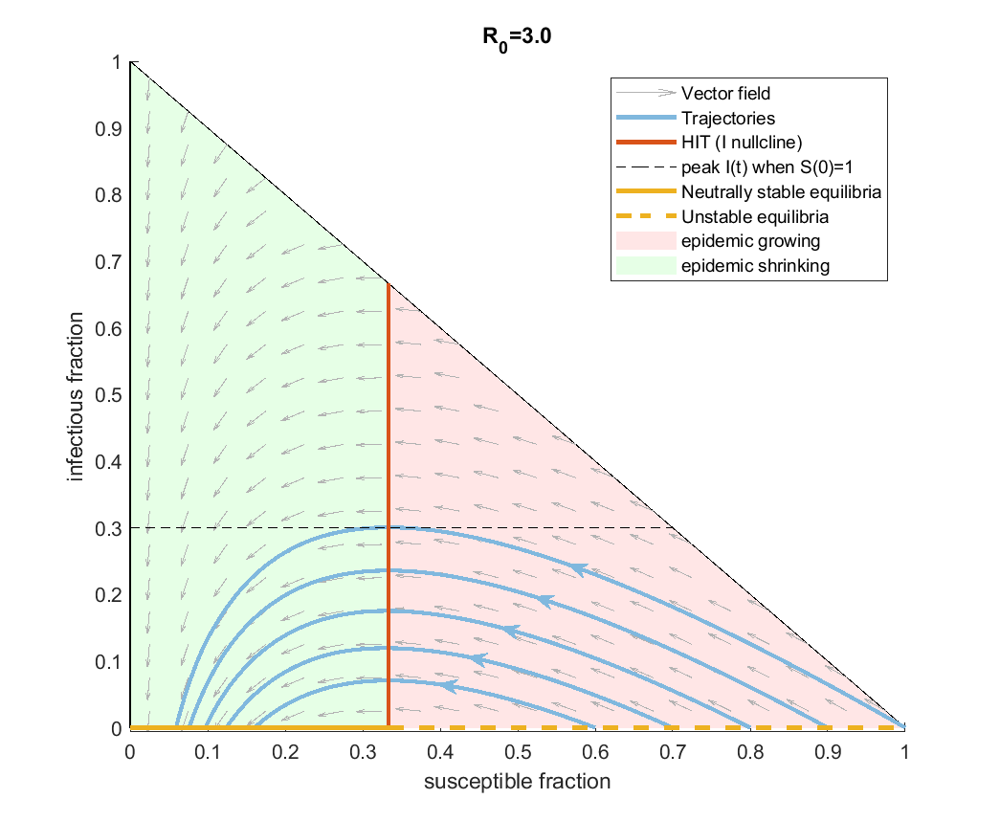
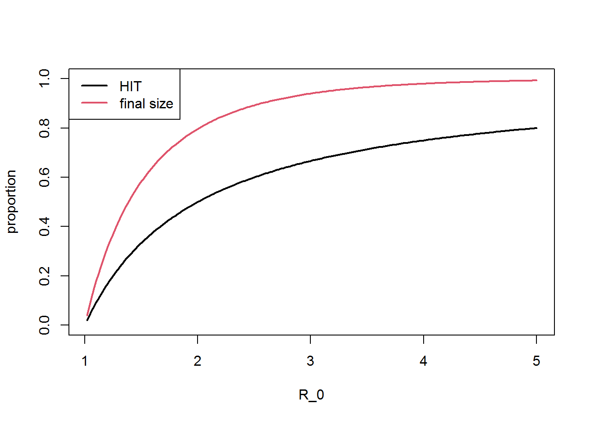
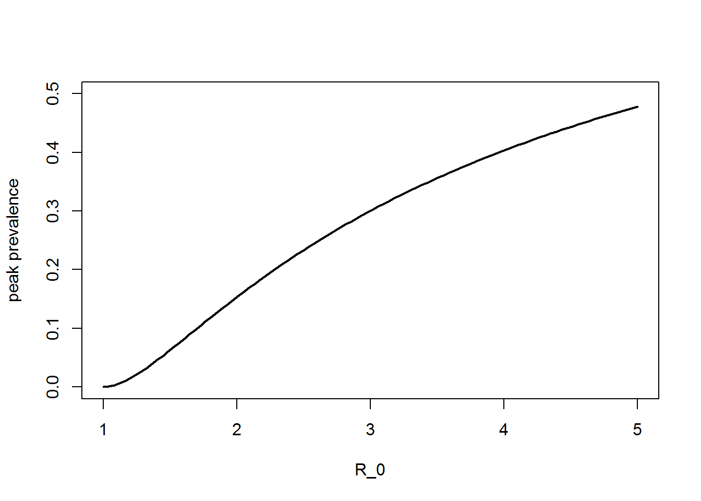

Topic 2. SIR model
\[ \newcommand{\vect}[1]{\boldsymbol{\mathbf{#1}}} \newcommand{\R}{\mathcal{R}} \newcommand{\Reff}{\mathcal{R}_\mathrm{eff}} \newcommand{\inc}{\mathrm{inc}} \]
1 Susceptible-infectious-recovered model
We start with one of the simplest compartment-based models of an epidemic - the susceptible-infectious-recovered (SIR) model in a closed, homogeneous, well-mixed population. This is a canonical model in infectious disease dynamics and, although it can be generalised and extended in lots of different ways, many of its qualitative properties apply to other more complex models.
The model splits the population \(N\) into three compartments representing the number of people who are susceptible \(S\), infectious \(I\) and recovered \(R\) and makes the following assumptions:
- Each individual contacts \(c>0\) randomly selected individuals per unit time.
- Contacts are selected randomly from the whole population.
- Some proportion \(p\in[0,1]\) of contacts between a susceptible individual and an infectious individual (which we will term an infective) result in transmission.
- Infectives transition to the recovered state at a rate \(\gamma>0\) per unit time.
- Individuals in the recovered state remain there for ever (i.e. have permanent immunity).
- Births, deaths and migration are neglected.
As we saw in the previous Topic, susceptible individuals transition to the infectious compartment at rate \(cpI(t)/N\) per unit time.
If we define \(\beta=cp\) to be the transmission rate then we obtain the following system of ordinary differential equations for \(S(t)\), \(I(t)\) and \(R(t)\):
\[ \begin{align*} \frac{dS}{dt} &= -\frac{\beta SI}{N} \\ \frac{dI}{dt} &= \frac{\beta SI}{N} - \gamma I \\ \frac{dR}{dt} &= \gamma I \end{align*} \]
Note:
- The ODE model treats \(S\), \(I\) and \(R\) as continuous variables, which will take non-integer values. This means that care is needed with interpretation and, in particular in situations where \(I(t)\) is small. There are two separate reasons for this: (1) when \(I(t)\) is small, stochastic effects become important and the epidemic may deviate significantly from its mean-field limit; (2) it is impossible in reality to have between zero and one infectious people, yet the SIR model admits solutions where \(0<I(t)\ll 1\), which can lead to unrealistic epidemics (e.g. where \(I(t)\) grows from \(10^{-12}\) to \(1\) over a period of several years).
Because the total population size \(N\) is fixed (we are ignoring births, deaths and migration), we have \(S(t)+I(t)+R(t)=N\) for all \(t\). Hence we can eliminate \(R(t)\) from the model and write it as a two-dimensional system, using \(\dot{S}\) to denote \(dS/dt\) and so on.
SIR model
\[ \begin{align*} \dot{S} &= -\frac{\beta SI}{N} \\ \dot{I} &= \frac{\beta SI}{N} - \gamma I \end{align*} \tag{1}\]
This system needs to be accompanied by an initial condition for \(S(0)\) and \(I(0)\).
Often, it is convenient to work with compartment sizes expressed as a fraction of the total population \(N\), i.e. \(\tilde{S}(t)=S(t)/N\), \(\tilde{I}(t)=I(t)/N\). In these variables, the system becomes \[ \begin{align*} \dot{\tilde{S}} &= -\beta \tilde{S}\tilde{I} \\ \dot{\tilde{I}} &= \beta \tilde{S}\tilde{I} - \gamma \tilde{I} \end{align*} \tag{2}\]
2 Numerical solutions
The basic SIR model is easy to solve numerically. For example, consider the model with \(\beta=0.2\), \(\gamma=0.1\). Suppose that initially 1% of the population is infections and everyone else is susceptible, so the initial conditions ares \(\tilde{S}(0)=0.99\), \(\tilde{I}(0)=0.01\). This gives the following solution for \(\tilde{S}(t)\), \(\tilde{I}(t)\) and \(\tilde{R}(t)\)
Two important observations may be made, which are true for general parameter values.
General properties of the SIR model
- The epidemic ends because the susceptible population becomes too small to sustain continued transmission.
- At the end of the epidemic, some positive proportion of the population remains susceptible. This is called herd immunity: not everyone is immune, those who aren’t are indirectly protected from subsequent infection by those who are.
Point 2 will be particularly important when we come to consider vaccination.
3 Force of infection, incidence and prevalence
We now introduce some important terms in epidemiological modelling.
3.1 Force of infection
The force of infection is the rate \(\lambda(t)\) at which susceptible individuals become infected per unit time. For the basic SIR model, this is \[ \lambda(t) = \beta\frac{I(t)}{N} = \beta \tilde{I}(t) \] In other words, the force of infection is the transmission rate parameter \(\beta\) multiplied by the infectious fraction \(I(t)/N\). Each infectious individual contributes a force of infection \(\beta/N\) per unit time.
The SIR model may be expressed in terms of the force of infection as \[ \begin{align*} \dot{S} &= -\lambda S \\ \dot{I} &= \lambda S - \gamma I \end{align*} \tag{3}\]
This may seem like unnecessary extra notation for this model, but it is useful in more complex models where the force of infection is defined by a more complicated equation, but the dynamics still follow the basic structure of (Equation 3).
Note: in epidemiological terminology, the force of infection is a hazard, and \(\lambda(t)\) is sometimes called the infection hazard. \(\lambda(t)\) has dimensions \(T^{-1}\).
3.2 Compartment-based models and waiting times
For compartment-based models in general, if the sum of all the transition rates out of a given compartment is some constant \(\Lambda>0\) then the probability that an individual who is in the compartment at time \(t\) is still in the compartment time \(\tau\) later is \(e^{-\Lambda t}\). Hence, the expected time an individual spends in a given compartment (called the mean waiting time) is \(1/\Lambda\).
From this we see that, for the SIR model, the waiting time in the \(I\) compartment (i.e. the mean infectious period) is \(1/\gamma\), as expected.
More generally if \(\Lambda(t)\) is time-dependent, the probability of an individual who is in the compartment at time \(t\) still being there at time \(t+\tau\) is \(\exp\left(-\int_t^{t+\tau} \Lambda(t') dt' \right)\).
The transition rate out of the \(S\) compartment is the force of infection \(\lambda\) so we have \[ P(\textrm{still susceptible at time } t+\tau \ | \ \textrm{susceptible at time } t ) = \exp\left(-\int_t^{t+\tau} \lambda(t') dt' \right) \]
Probabilistic interpretation in deterministic models
It can seem like talking about probability is in conflict with the fact the model is purely deterministic.
We should remember that deterministic compartment-based models can be derived as the mean-field equations for a corresponding stochastic model, i.e. they track the proportion of a population that is in each compartment at a given point in time, in the limit where the population is infinitely large (and there is a non-negligible fraction of the population in each relevant compartment) such that stochastic effects of negligible.
When we talk about probability, it should be interpreted in this context. It is often useful to think about a cohort of individuals who entered a given compartment at the same time. Then, the statement above about the probability of remaining in that compartment at some later time can be interpreted as the proportion of the cohort that remain in that compartment. When the cohort is sufficiently large, these are effectively the same thing.
3.3 Prevalence and incidence
Prevalence relates to the number of people who are currently in the infectious state at a given point in time, while incidence relates to the occurrence of new infections.
Prevalence is normally expressed as a proportion and for the basic SIR model this is simply \(\tilde{I}(t)\). This is sometimes referred to as point prevalence because it is the prevalence at a single point in time.
The instantaneous incidence rate per unit time is the rate at which people are moving from \(S\) to \(I\). This can be expressed as an absolute number of infections per unit time, \(\lambda S\), or as a proportion of the population, \(\lambda \tilde{S}\).
Per capita prevalence and incidence rate
\[ \begin{array}{rll} \textrm{prevalence} =& \tilde{I}(t) & \qquad \textrm{(dimensionless)} \\ \textrm{incidence rate} =& \lambda(t) \tilde{S}(t) & \qquad \textrm{(dimensions }T^{-1}\textrm{)} \end{array} \]
For the SIR model, the force of infection is \(\lambda(t)=\beta \tilde{I}(t)\), so the absolute incidence rate is \(\beta SI/N\), and the per capita incidence rate is \(\beta SI/N^2= \beta \tilde{S}\tilde{I}\).
Incidence is often also used to refer to the number of new infections in a specified period of time (e.g. one day). In general, this can be calculated by integrating the incidence rate over the relevant time period. For example, the absolute incidence in a time period \([t,t+\Delta t]\) is \[ \textrm{incidence in } [t,t+\Delta t] = \int_t^{t+\Delta t} \lambda(t') S(t') dt' \]
This can also be calculated via the change in the size of the susceptible population between \(t\) and \(t+\Delta t\): \[ \textrm{incidence in } [t,t+\Delta t] = S(t)-S(t+\Delta t) \] This follows by application of the fundamental theorem of calculus to the ODE for \(\dot{S}\).
Estimating prevalence and incidence from data
Prevalence and incidence relate to different ways in which information about the state of an epidemic may be gathered:
- If we take a random sample of the population and tested whether they were infectious or not, this would give a (noisy) estimate of the prevalence.
- If we count the number of new cases detected each day, this would be a measure of the daily incidence. Note in reality, this type of data is likely to be affected by incomplete ascertainment and reporting delay, meaning that it is a lagged and incomplete measure of daily incidence.
- It is difficult to observe the \(S\) and \(R\) compartments directly, although in some cases seroprevalence data (which measures the number of people who have antibodies indicating a previous infection) may be used to estimated the recovered population \(R(t)\).
We will return to methods for estimating incidence in more detail later on.
4 Basic and effective reproduction numbers
4.1 Basic reproduction number
Recall from the previous Topic:
Basic reproduction number
The basic reproduction number \(\mathcal{R}_0\) is the expected number of infections caused by a single infectious individual in a fully susceptible population over the course of their infectious period.
Note:
- It is important to remember that \(\mathcal{R}_0\) is the average number of infections. In the basic SIR model, this is not an important distinction because the model essentially assumes everyone is identical, and so everyone causes \(\R_0\) infections (if the population is fully susceptible). But more complex models allow for individual heterogeneity (e.g. by treating the number of infections caused by a single individual as a random variable, or by dividing the population into different types). We will come back to these models later, but the important thing for now is that \(\R_0\) is the number of infections caused by an average infected person. This might not be the same as the number of infections caused by an average person, because infected people at the start of an epidemic may differ systematically from the average in some variable that affects transmission (e.g. age, contact rate).
The basic reproduction number for the SIR model (Equation 1) can be derived in different ways. As we saw in the previous Topic, one way is by expressing \(\R_0\) as the product of the mean duration of infectiousness \(1/\gamma\), the contact rate per unit time \(c\) and the probability of transmission given contact \(p\). Recalling that we have defined \(\beta=pc\), we obtain
\(\R_0\) for SIR model
\[ \R_0 = \frac{\beta}{\gamma} \]
An alternative approach is to consider a modified version of the SIR model (Equation 1), in which people move out of the susceptible compartment when they become infected as usual, but instead of the entering the infectious compartment, they enter some other compartment, which does not contribute to the force of infection. If we further assume that the \(S/N\) on the right-hand side of the ODE can be approximated by \(1\), we obtain the system \[ \begin{align*} \dot{S} &= -\beta I \\ \dot{I} &= - \gamma I \end{align*} \] In this modified model, only people who are in the \(I\) compartment at the start of the epidemic are capable of transmitting the disease. Hence the total number of infections that are caused by the initially infectious individual(s) is \(S(0) - \lim_{t\to\infty} S(t)\).
The system can be solved analytically to give \(I(t)=I(0)e^{-\gamma t}\) and \(S(t)=S(0) - I(0) \beta/\gamma\left(1-e^{-\gamma t}\right)\). So if we initialise the system with a single infective, \(I(0)=1\), then we have \(\R_0 = S(0) - \lim_{t\to\infty} S(t) = \beta/\gamma\) as expected.
4.2 Non-dimensionalisation
It is sometimes convenient to non-dimensionalise the SIR model by introducing a dimensional time variable \(\tilde{t}=\gamma t\). This can be though of as measuring time in units of the average infectious period \(1/\gamma\), which defines a natural timescale fo the epidemic. In the dimensionless time variable, the system of ODEs (Equation 1) becomes \[ \begin{align*} \frac{d\tilde{S}}{d\tilde{t}} &= -\R_0 \tilde{S}\tilde{I} \\ \frac{d\tilde{I}}{d\tilde{t}} &= \R_0 \tilde{S}\tilde{I} - \tilde{I} \\ \end{align*} \]
This shows that the recovery rate parameter \(\gamma\) really just determines the time scale for the dynamics: doubling \(\gamma\) while holding \(\R_0\) fixed does not change the epidemic other than making everything happen twice as quickly.
Therefore the SIR model only really has one parameter (\(\R_0\)) that has a qualitative effect on the epidemic dynamics. Larger values of \(\R_0\) result in faster epidemics with higher peaks. This is shown in Figure 2, where the solution for \(\tilde{I}\) is shown agains dimensionless time \(\tilde{t}\) for different values of \(\R_0\). This effectively shows the epidemic in a re-scaled time variable that measures time in units of the mean infectious period \(1/\gamma\).

4.3 Effective reproduction number
Recall the effective reproduction number \(\R_\mathrm{eff}(t)\) is the expected number of infections caused by a single infectious individual over the course of their infectious period when some fraction \(S(t)/N\) of the population is susceptible.
Since the SIR model assumes that everyone in the population member is equally likely to be a contact, the expected proportion of contacts who are susceptible is just \(S(t)/N\). Hence the effective reproduction number for the SIR model at time \(t\) is \[ \R_\mathrm{eff}(t) = \R_0 \frac{S(t)}{N} = \frac{\beta S(t)}{\gamma N} \]
4.4 Relationship between reproduction number and epidemic growth rate
In the early stages of an epidemic when \(S(t)/N\approx 1\), we have \(\dot{I}\approx (\beta-\gamma)I\) and hence \(I(t)\) grows exponentially (or decays if \(\beta<\gamma\)).
Early stage approximation
In the early stages of an epidemic when the population is almost fully susceptible, prevalence grows/decays approximately exponentially: \[ I(t) \propto e^{(\beta-\gamma) t} = e^{(\R_0-1)\gamma t} \]
More generally, we define the epidemic growth rate \(r\) as the relative rate of change in prevalence \(I\) (or equivalently the rate of change of \(\ln(I)\)) per unit time:
Epidemic growth rate
\[ r = \frac{1}{I}\frac{dI}{dt} \]
For the SIR model, it follows immediately from the ODE for \(I\) that \(r=\beta S/N - \gamma\). Recalling that \(\R_\mathrm{eff}(t) = \beta S / (\gamma N)\), we have the following relationship between \(\R_\mathrm{eff}(t)\) and \(r\):
Relationship between \(\R_\mathrm{eff}(t)\) and \(r\)
\[ r = \gamma\left(\R_\mathrm{eff}(t) -1 \right) \]
We can see from the equation above that the epidemic growth rate \(r\) is positive if and only if \(\R_\mathrm{eff}(t)>1\). Also, for a given \(\R_\mathrm{eff}(t)\), the epidemic dynamics are faster if the infectious period \(1/\gamma\) is shorter.
Notes:
- In practice, it is usually difficult to measure \(\R_0\) or \(\Reff\) directly, but the relationship above in principle allows us to estimate \(\Reff\) if we know the mean infectious period \(1/\gamma\). If prevalence \(I(t)\) is growing exponentially with rate \(r\), a plot of \(\ln I(t)\) against \(t\) will be approximately a straight line of slope \(r\). This gives above gives a crude way to estimate \(r\) and hence \(\Reff\).
- Data on prevalence may not be available (or may be very noisy or biased). But note that the incidence of new cases is proportional to \(S(t)I(t)\). Hence, if \(I(t)\sim e^{rt}\) then provided \(S(t)\) does not change drastically over the estimation window, incidence will also be approximately proportional to \(e^{rt}\). We will come back to these problems in more detail later on.
- The relationships above between \(r\) and \(\R_0\) or \(\Reff\) rest on the assumption of the SIR model that recovery is a Markovian (i.e. memoryless) process. We will see a more general relationship for non-Markovian recovery models later on.
Some of the key properties of \(r\) and \(\Reff\) as metrics of an unfolding epidemic are summarised below.
| Epidemic growth rate | Reproduction number |
|---|---|
| Can be estimated more or less empirically from data on e.g. reported cases | Needs additional information or assumptions to estimate |
| Describes how quickly epidemic is growing and, therefore, how large it will be at some time in the near-future if growth rate is sustained | Determines how many people will ultimately be infected |
| Is uninformative on how epidemic will respond to intervention | Quantifies the strength of intervention needed to control epidemic |
5 Frequent-dependent versus density-dependent transmission
The form of the SIR model in (Equation 1) assumes what is known as the frequency-dependent transmission. Here, the force of infection \(\lambda(t)\) is proportional to \(I(t)/N\), the infectious fraction of the population. If the population size \(N\) increased, the model would behave just the same but with a proportionate increase in the variables \(S\), \(I\) and \(R\).
An alternative formulation is to assume density-dependent transmission, where the force of infection \(\lambda(t)\) is proportional to \(I(t)\), the absolute number of infectives. In a density-dependent transmission model, increasing the population size increases the reproduction number and therefore changes the epidemic dynamics.
Density-dependent SIR model
\[ \begin{align*} \dot{S} &= -\beta SI \\ \dot{I} &= \beta SI - \gamma I \end{align*} \tag{4}\]
When modelling an epidemic in a single population of constant size, the distinction between frequency-dependent and density-dependent transmission is not crucial: the models can always be made equivalent via a different choice of the transmission rate \(\beta\).
However, when modelling infectious disease dynamics in a population with varying size, multiple populations, or different subgroups the distinction matters. Frequency-dependent transmission reflects a situation where the number of contacts per person is independent of population size, which is often a reasonable assumption for a directly transmitted pathogen in a large population where contact rates are largely determined by social structure.
Density-dependent transmission means that the number of contacts per person increases linearly with population size. This may better capture transmission patterns in confined settings or areas where an increase in population density is expected to increase contact rates.
An associated point is that the SIR models in (Equation 1) and (Equation 4) both ignore deaths. This may be a reasonable approximation for an epidemic of a disease with a low mortality rate, but what if the mortality rate is non-negligible? Then, even ignoring births and non-disease-associated deaths (which will be covered in a later Topic), the population size \(N\) is not constant.
The equations for the density-dependent model in (Equation 4) are not affected by changing \(N\), because transmission is determined by the absolute number of infectives. But, in the frequency-dependent model, the equations depend on \(N(t)\), so the system needs to be augmented in this situation to include an ODE for population size \(N(t)\):
Frequency-dependent SIR model with disease-induced mortality
\[ \begin{align*} \dot{S} &= -\frac{\beta SI}{N} \\ \dot{I} &= \frac{\beta SI}{N} - \gamma I \\ \dot{N} &= -\gamma p_M I \end{align*} \] where \(p_M\in[0,1]\) is the proportion of infections that cause death.
Alternatively, we could retain the equation for the recovered compartment (\(\dot{R}=\gamma(1-p_M)I\)) and replace \(N(t)\) by \(S(t)+I(t)+R(t)\). This would give an equivalent system expressed in terms of \(S\), \(I\) and \(R\) instead of \(S\), \(I\) and \(N\).
It can be seen from these equations that, by reducing \(N(t)\), disease-induced mortality actually accelerates transmission and increases the fraction of the population infected. This happens because contacts that would otherwise have been with recovered individuals are replaced by contacts with non-recovered individuals (some fraction of whom will be infectious).
6 Phase plane analysis and herd immunity threshold
From this section onwards, we will work with population fractions but drop the tilde notation, i.e. we use \(S\) to denote the susceptible fraction and \(I\) to denote the infectious fraction.
The phase space is the triangular region of the \((S,I)\) plane defined by \(S+I\le 1\) (see Figure 3 below).
The SIR model (Equation 2) has a continuous family of equilibria because any state with \(I=0\) is an equilibrium (and there are no other equilibria). The state \(S=1\), \(I=0\) is an important equilibrium called the disease-free equilibrium (DFE).
The Jacobian of the SIR model is \[ J = \left [ \begin{array}{ll} -\beta \tilde{I} & -\beta \tilde{S} \\ \beta\tilde{I} & \beta\tilde{S} - \gamma \end{array} \right] \] At the DFE, we have \[ J = \left [ \begin{array}{ll} 0 & -\beta \\ 0 & \beta - \gamma \end{array} \right] \] which has eigenvalues \(\lambda_1=\beta-\gamma\) and \(\lambda_2=0\).
Since \(R_0=\beta/\gamma\) then \(\beta>\gamma\) if and only if \(\R_0>1\). So if \(\R_0>1\) then the DFE is unstable. If \(\R_0<1\) the DFE is neutrally stable. In practice, this means that introduction of a small number of infections into an otherwise susceptible population leads to infections dying out, and the system returning to a slightly different equilibrium with \(\tilde{I}=0\) and \(\tilde{S}<1\).
\(\R_0\) as a bifurcation parameter
The DFE is unstable (and hence introduction of a small number of infectious people will cause an epidemic) if and only if \(\R_0>1\).
The \(I\) nullcine is the vertical line \(S=1/\R_0\). This critical value of the susceptible population size is known as the herd immunity threshold.
Herd immunity threshold
If \(S(t)>1/\R_0\) then \(\dot{I}>0\) which means that the epidemic is growing.
If \(S(t)<1/\R_0\) then \(\dot{I}<0\) which means that the epidemic is shrinking.
Notes:
- When the system is at the herd immunity threshold, the effective reproduction number (\(\Reff=\R_0 S(t)\)) is equal to \(1\).
- The herd immunity threshold is the point at which prevalence \(I(t)\) switches from growing to shrinking. Incidence peaks before prevalence does (we say that prevalence lags incidence): the rate of change of incidence is \(\beta(\dot{S}I+S\dot{I})\) so, recalling that \(\dot{S}\) is always negative, by the time \(\dot{I}=0\) incidence must already be falling.
By applying linear stability analysis above to all the equilibria of the SIR model, we obtain the following result
Stability of equilibria
All equilibria \((S,0)\) with \(S>1/\R_0\) are unstable: the introduction of a small number of infectives will cause an epidemic.
All equilibria \((S,0)\) with \(S<1/\R_0\) are neutrally stable: the introduction of a small number of infectives will not cause an epidemic; instead the system will return to another nearby equilibrium.
This implies that, once an epidemic has started, the only way it can end is by reaching one of the equilibria to the left of the herd immunity threshold. In other words, the susceptible population has to drop below the herd immunity threshold \(S=1/\R_0\), otherwise the population remains at risk of an epidemic if infectives are introduced.

Note: if the population is initially almost all susceptible, the herd immunity condition \(S(t)<1/\R_0\) is equivalent to a condition on the cumulative fraction of the population infected (i.e. cumulative incidence): \[ \textrm{cumulative incidence} > 1- \frac{1}{\R_0} \]
7 Final epidemic size
Although there is no closed-form solution to the SIR model in general, it is possible to solve the system in the phase plane. It follows from (Equation 2) that \[ \frac{dI}{dS} = -1 + \frac{\gamma}{\beta S} = -1 + \frac{1}{\R_0 S} \] which may be integrated to give \[ I(t) - I(0) = S(0) - S(t) + \frac{1}{\R_0} \ln\left( \frac{S(t)}{S(0)} \right) \tag{5}\]
This implies that \(I(t)+S(t)-\ln(S(t))/\R_0\) is a conserved quantity and has some important applications. Since we must have \(\lim_{t\to\infty} I(t)=0\), the final susceptible fraction \(S_\infty\) must satisfy \[ 0 = S(0)+I(0) - S_\infty + \frac{1}{\R_0} \ln\left( \frac{S_\infty}{S(0)} \right) \tag{6}\]
7.1 Final size of an epidemic in a fully susceptible population
Assuming that everyone in the population is initially either susceptible or infectious (so that we have \(S(0)=1-\epsilon\), \(I(0)=\epsilon\)), the fraction of the population that has been infected by the end of the epidemic is \(z=1-S_\infty\). This is often referred to as the final size of the epidemic, and must satisfy \[ 0 = z + \frac{1}{\R_0} \ln\left( \frac{ 1-z}{1-\epsilon} \right) \]
In the limit \(\epsilon\to 0\) (i.e. the initially infectious fraction is vanishingly small), we obtain the so called final size equation.
Final size equation
The final size \(z\) of an SIR epidemic with basic reproduction number \(\R_0\) and initially fully susceptible population satisfies \[ 1-z = e^{-\R_0 z} \tag{7}\]
We have derived this equation directly from the SIR model ODEs. It can also be obtained via an alternative argument, which we present informally here, though it can be made rigorous (e.g. see Miller, 2012). Each infective contributes \(\R_0/N\) towards the force of infection over their infectious period. If \(zN\) individuals are infected over the course of the epidemic, the cumulative force of infection (i.e. accumulated hazard) is therefore \((zN)(\R_0/N)=\R_0z\). So Equation 7 says that the probability that a randomly selected individual escapes infection (\(1-z\)) is equal to the exponential of the negative accumulated hazard (which is a straightforward consequence of the differential equation for survival probability, \(\dot{p}=-\lambda p\)).
As we will see later, the observation that the probability of escaping infection is \(e^{-\R_0 z}\) means that Equation 7 holds for a wider class of models than just the SIR model (and can be generalised to further models still).
Equation 7 does not have a closed-form solution for \(z\), but is straightforward to solve numerically for a given value of \(\R_0\). Figure 4 shows final size \(z\) as a function of \(\R_0\). This graph also shows the minimum number of people who need to be infected to reach the herd immunity threshold (HIT), which is \(1-1/\R_0\).
Both curves have a threshold at \(\R_0=1\) and a similar shape for \(\R_0>1\), but the final epidemic size is always greater than the herd immunity threshold. This happens because the herd immunity threshold is the point at which the epidemic changes from growing to shrinking, but a large number of additional infections occur in the shrinking phase. This is known as overshooting the herd immunity threshold.

When \(\R_0\) is only just above 1, a Taylor expansion of Equation 7 reveals that \[ z\approx \frac{2}{\R_0}\left(1-\frac{1}{\R_0}\right) \] which shows that the final size is just under double the HIT. This is because almost as many people get infected in the shrinking phase of the epidemic as in the growth phase. As \(\R_0\) increases, final size is always greater than the HIT but the relative gap between them shrinks; and when \(\R_0\) is very large both HIT and final size are close to \(1\).
7.2 Final size of an epidemic in a partially susceptible population
In the more general case where some fraction \(R(0)\) of the population is initially immune, we can obtain from (Equation 6) a more general version of the equation for the final size \(z=S(0)+I(0)-S_\infty\): \[ 0 = z + \frac{1}{\R_0} \ln\left( 1+\frac{I(0)-z}{S(0)} \right) \] This equation allows the size of an SIR epidemic starting at an arbitrary initial condition \((S(0),I(0))\) to be calculated.
Note that we can also write the above equation in terms of the effective reproduction number at the start of the epidemic \(\R_\mathrm{eff}=\R_0 S(0)\). If we assume \(I(0)\) is negligibly small, this leads to \[ 0 = \frac{z}{S(0)} + \frac{1}{\R_\mathrm{eff}} \ln\left( 1-\frac{z}{S(0)} \right) \]
From this we see that, for a given value of \(\Reff\), \(z/S(0)\) satisfies the same final size equation (Equation 7) as \(z\) does in the case where there is no initial population immunity (i.e. \(R(0)=0\)) and \(\Reff=\R_0\). This means that if we observe \(\Reff\) in the early stages of an epidemic and use this to calculate the final size \(z\), the actual size of the epidemic will be \(zS(0)\).
This has an important implication. Reducing the size of the susceptible population has two compounding effects effects: it reduces the number of people at risk, and it also \(\Reff\), which reduces the fraction of the people at risk that will get infected.
7.3 Final epidemic size with disease-induced mortality
The calculations above assume that the disease has a negligible mortality rate so that the total population size remains constant. As we have seen above, if the disease has non-negligible mortality and contact rates are frequency-dependent, the changing population size affects the transmission dynamics. How does this impact final size?
From a previous section, if some fraction \(p_M\in(0,1]\) of infections cause death, we have the following model \[ \begin{align*} \dot{S} &= -\frac{\beta SI}{N} \\ \dot{I} &= \frac{\beta SI}{N} - \gamma I \\ \dot{N} &= -\gamma p_M I \end{align*} \]
Recalling that \(\R_0=\beta/\gamma\), it follows that \[ \frac{dS}{dN} = \frac{\R_0 S}{p_M N} \] which may be integrated to give \[ \ln\left(\frac{S(t)}{S(0)}\right) = \frac{\R_0}{p_M} \ln\left(\frac{N(t)}{N(0)}\right) \]
If we assume that the initial susceptible fraction is close to \(1\) and set \(N(0)=1\) (so that the state variables \(S(t)\), \(I(t)\), \(N(t)\) represent the relevant compartment sizes relative to the initial size of the population) then we get \[ S(t) = N(t)^{\R_0/p_M} \]
We also know that, at the end of the epidemic, if the fraction remaining susceptible is \(S_\infty\) then the number of deaths must be \(p_M(1-S_\infty)\) and so the final population size must be \[ N_\infty= 1-p_M(1-S_\infty) \]
Combining these last two equations, we obtain the following final size equation for the fraction infected \(z=1-S_\infty\).
Final size with disease-induced mortality
\[ \ln(1-z) = \frac{\R_0}{p_M}\ln\left( 1 - p_M z \right) \]
Note that this equivalent to Equation 7 in the limit \(p_M \to 0\). It can be shown that \(z\) is an increasing function of \(p_M\) so, for a given \(\R_0\), a more lethal disease will infect a higher fraction of the population. And as \(p_M\to 1\), \(z\to 1\), so a disease with a 100% mortality rate will infect 100% of the population for any \(\R_0>1\)!
The reason this happens is that recovered people reduce contact rates between susceptibles and infectives, but dead people do not. However, it is worth reflecting on what would need to happen for this effect to be observed in reality. The total population size would need to be reduced enough that contacts that would have occurred with people who are now dead are replaced by contacts with somebody else. It seems likely that, in many situations involving real human populations, such a drastic outcome would lead to major contact avoidance behaviours, which would alter the course of the epidemic.
7.4 Peak prevalence
Equation 5 can also be used to calculate the maximum value of \(I(t)\) (i.e. peak prevalence), because this occurs when \(S(t)\) crosses the herd immunity threshold, i.e. \(S(t)=1/\R_0\).
\[ I_\mathrm{max} = S(0)+I(0) - \frac{1}{\R_0}\left( 1 + \ln(\R_0) + \ln(S(0)) \right) \]
In the case where \(I(0)=\epsilon\) is small and \(S(0)= 1-\epsilon\), we have
Peak prevalence
\[ I_\mathrm{max} = 1 - \frac{1}{\R_0}\left( 1 + \ln(\R_0) \right) \]
